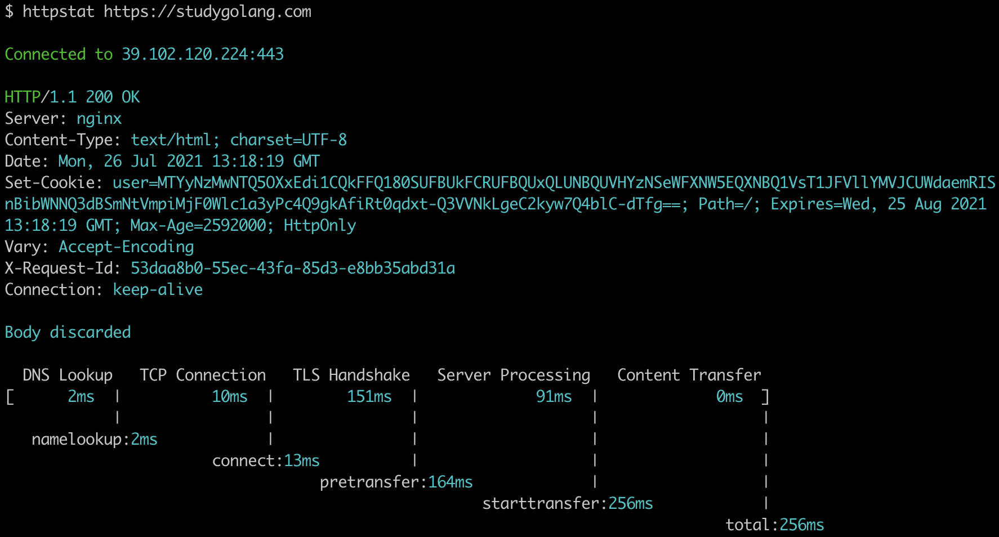
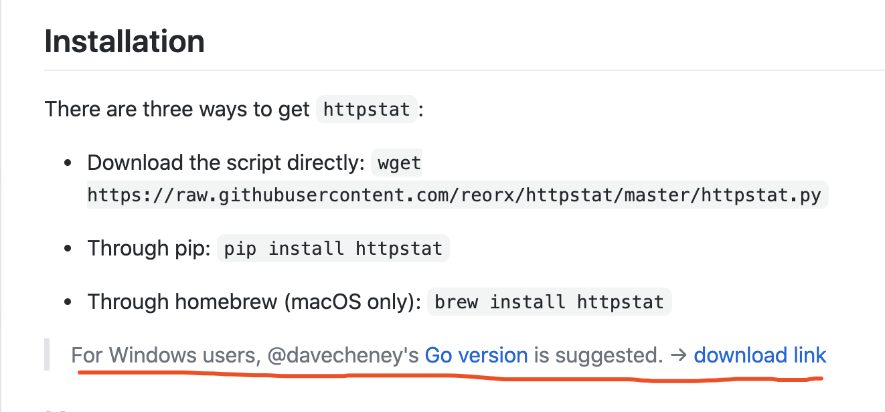

Go开源项目推荐：500行代码确认请求时间花在哪
大家好，我是 polarisxu。
工作中遇到请求慢，难免想要查看时间都花在哪里了。办法肯定有不少，比如浏览器带的工具等。不过今天我要推荐一个命令行工具，目的有两个：
- 安装、使用方便，可以清晰的看出时间花在哪里了，建议放入自己的常用工具箱；
- Go 语言实现的，500 行左右代码，可以作为新手项目学习、练习、实战；
项目名称：httpstat，作者是 davecheney 大神。项目地址：https://github.com/davecheney/httpstat，截止本文发布，Star 数 5.3k+。
先看使用的效果图：

最下面可以看到时间花在哪些阶段了，是不是一目了然？！
这个项目是受一个类似的 Python 项目启发的：https://github.com/reorx/httpstat。实话说，这个时候 Go 的优势很明显：跨平台方便，安装方便。那个 Python 项目现在甚至建议 Windows 用户使用这个 Go 版本的。

httpstat 安装的话，go install 安装即可。看看使用说明：
$ httpstat
Usage: httpstat [OPTIONS] URL
OPTIONS:
-4 resolve IPv4 addresses only
-6 resolve IPv6 addresses only
-E string
client cert file for tls config
-H value
set HTTP header; repeatable: -H 'Accept: ...' -H 'Range: ...'
-I don't read body of request
-L follow 30x redirects
-O save body as remote filename
-X string
HTTP method to use (default "GET")
-d string
the body of a POST or PUT request; from file use @filename
-k allow insecure SSL connections
-o string
output file for body
-v print version number
ENVIRONMENT:
HTTP_PROXY proxy for HTTP requests; complete URL or HOST[:PORT]
used for HTTPS requests if HTTPS_PROXY undefined
HTTPS_PROXY proxy for HTTPS requests; complete URL or HOST[:PORT]
NO_PROXY comma-separated list of hosts to exclude from proxy
从以上的选项可以看出支持的特性。
开头说了，这个项目的代码很少，可以作为一个实战项目学习。